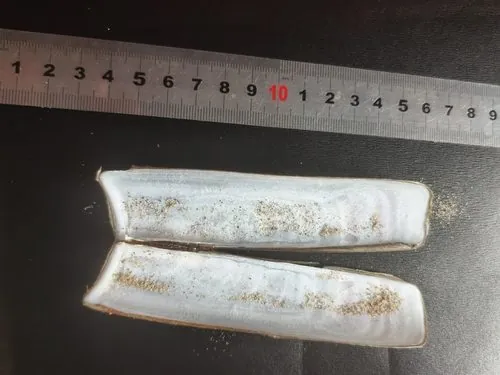

软体动物 · 动物界
大竹蛏 Solen grandis

壳长可达二十厘米的大型竹蛏，两壳细长如竹片，足部强壮，能迅速钻沙，是中国沿海名贵的食用贝类。
- 分类
- 门软体动物门纲双壳纲目帘蛤目科竹蛏科属竹蛏属
- 栖息环境
- 潮间带下区至水深二十米的沙质和沙泥质滩涂
- 地理分布
- 西北太平洋，包括中国南北沿海、日本和朝鲜半岛
- 保护级别
- 尚无保护级别；资源受滩涂采捕影响
物种志
大竹蛏的贝壳细长，呈竹片状，壳长可达二十厘米，壳高仅为壳长的五分之一左右，两壳等大，壳质薄而脆，壳面呈黄绿至灰褐色，有细密的生长纹，前后两端开口，足部从前端伸出。它的足部细长有力，能在沙中快速掘穴，受惊时会喷水并迅速缩入沙内。水管较短，末端有触手，滤食时伸出沙面。与竹蛏相比，它的个体更大、壳更细长。
它分布于西北太平洋，包括中国南北沿海、日本和朝鲜半岛，栖息在潮间带下区至水深二十米的沙质和沙泥质滩涂，喜欢盐度较高、水流畅通的沙底。它在沙中掘垂直的洞穴，靠水管滤食浮游植物和有机颗粒，涨潮时伸出水管取食。繁殖期在春夏，雌雄异体，幼虫经浮游阶段后附着到沙底。大竹蛏个体大、肉味鲜美、出肉率高，是中国沿海名贵的食用贝类，多用盐水吐沙后清蒸或做汤。目前尚无保护级别，资源受滩涂采捕影响。
形态与习性
- 食性滤食浮游植物和有机颗粒
- 壳长可达二十厘米，壳高约为壳长五分之一
- 足部细长有力，能在沙中快速掘穴
- 栖息环境潮间带下区至水深二十米的沙底
- 繁殖春夏繁殖，幼虫经浮游期后附着沙底
- 食用个体大、出肉率高，清蒸或做汤
趣味知识
- 大竹蛏的壳又细又长，两片合起来像一把薄薄的竹片刀。
- 它钻沙的速度极快，人一靠近，洞口的水柱一喷就消失不见。
- 大竹蛏比普通竹蛏更大更贵，是沿海宴席上的高档小海鲜。